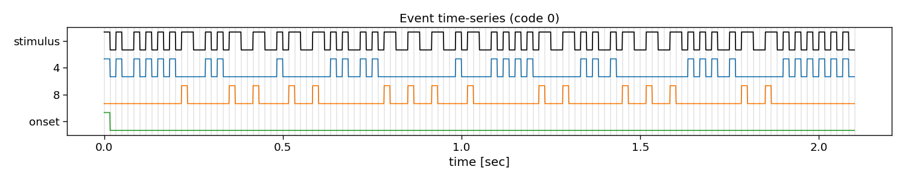
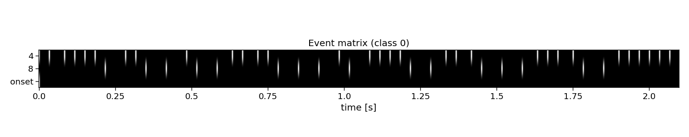

Note
Go to the end to download the full example code
Getting started
This getting started tutorial shows an example of how to use the PyntBCI library for analysing code-modulated responses. This tutorial makes use of a small dataset of EEG data, recorded from one participant during a single session. This data is already minimally preprocessed following a spectral filter with a band-pass at 2-30 Hz and a downsample from 2 kHz to 240 Hz. The stimuli that were shown are a circularly shifted modulated Gold code (shift register length 6, shift between stimuli 2 bits), presented at 60 Hz. The participant focused on each of the 32 stimuli once in a 4x8 matrix speller, where each presentation lasted 4.2 seconds (2 code cycles) after a 0.8 second cue.
In this notebook, the reconvolution CCA (rCCA) method for decoding EEG is demonstrated, see [1] and [2]. Additionally, rCCA is compared to eCCA, the so-called reference pipeline as discussed in the c-VEP review [3].
References
import os
import matplotlib.pyplot as plt
import numpy as np
import seaborn
import pyntbci
seaborn.set_context("paper", font_scale=1.5)
The data
The dataset consists of: (1) The EEG data X that is a matrix of k trials, c channels, and m samples; (2) The labels y that is a vector of k trials; (3) The pseudo-random noise-codes V that is a matrix of n codes and m samples. Note, the codes are upsampled to the EEG sampling frequency and contain only one code-cycle. During a trial, however, the codes were repeated 2 times (2 code cycles).
# Path to pyntbci (to read the tutorial data and standard cap files)
path = os.path.join(os.path.dirname(pyntbci.__file__))
# Load tutorial data
tmp = np.load(os.path.join(path, "data", "tutorial.npz"))
X = tmp["X"]
y = tmp["y"]
V = tmp["V"]
fs = tmp["fs"]
fr = 60
print("X", X.shape, "(trials x channels x samples)") # EEG
print("y", y.shape, "(trials)") # labels
print("V", V.shape, "(classes, samples)") # codes
print("fs", fs, "Hz") # sampling frequency
print("fr", fr, "Hz") # presentation rate
# Extract data dimensions
n_trials, n_channels, n_samples = X.shape
n_classes = V.shape[0]
# Read cap file
capfile = os.path.join(path, "capfiles", "biosemi64.loc")
with open(capfile, "r") as fid:
channels = []
for line in fid.readlines():
channels.append(line.split("\t")[-1].strip())
print("Channels:", ", ".join(channels))
# Visualize EEG data
i_trial = 0 # the trial to visualize
plt.figure(figsize=(15, 15))
plt.plot(np.arange(0, n_samples) / fs, 25e-6 * np.arange(n_channels) + X[i_trial, :, :].T)
plt.xlim([0, 1]) # limit to 1 second EEG data
plt.yticks(25e-6 * np.arange(n_channels), channels)
plt.xlabel("time [sec]")
plt.ylabel("channel")
plt.title(f"Single-trial multi-channel EEG time-series (trial {i_trial})")
plt.tight_layout()
# Visualize labels
plt.figure(figsize=(15, 3))
hist = np.histogram(y, bins=np.arange(n_classes + 1))[0]
plt.bar(np.arange(n_classes), hist)
plt.xticks(np.arange(n_classes))
plt.xlabel("label")
plt.ylabel("count")
plt.title("Single-trial labels")
plt.tight_layout()
# Visualize codes
Vup = V.repeat(20, axis=1) # upsample to better visualize the sharp edges
plt.figure(figsize=(15, 8))
plt.plot(np.arange(Vup.shape[1]) / (20 * fs), 2 * np.arange(n_classes) + Vup.T)
for i in range(1 + int(V.shape[1] / (fs / fr))):
plt.axvline(i / fr, c="k", alpha=0.1)
plt.yticks(2 * np.arange(n_classes), np.arange(n_classes))
plt.xlabel("time [sec]")
plt.ylabel("code")
plt.title("Code time-series")
plt.tight_layout()
X (32, 64, 1008) (trials x channels x samples)
y (32,) (trials)
V (32, 504) (classes, samples)
fs 240 Hz
fr 60 Hz
Channels: Fp1, AF7, AF3, F1, F3, F5, F7, FT7, FC5, FC3, FC1, C1, C3, C5, T7, TP7, CP5, CP3, CP1, P1, P3, P5, P7, P9, PO7, PO3, O1, Iz, Oz, POz, Pz, CPz, Fpz, Fp2, AF8, AF4, AFz, Fz, F2, F4, F6, F8, FT8, FC6, FC4, FC2, FCz, Cz, C2, C4, C6, T8, TP8, CP6, CP4, CP2, P2, P4, P6, P8, P10, PO8, PO4, O2
The event matrix
The first step for reconvolution is to find within the sequences the repetitive events. This can be imposed “manually” by choosing the event definition that we believe the brain responds to. Here, the so-called “duration” event is used, which marks the length of a flash as the important piece of information. As the sequences in this dataset were modulated, there are only two events: a short and a long flash. Additionally, a third event is added that will account for the onset of a trial, during which all of a sudden the screen started flashing. The event matrix is a matrix of n classes, e events, and m samples.
Please, note that more event definitions exist, which can be explored with the event variable of rCCA. For instance, event=”contrast” is a useful event definition as well, which looks at rising and falling edges, generalising over the length of a flash.
# Create event matrix
E, events = pyntbci.utilities.event_matrix(V, event="duration", onset_event=True)
print("E:", E.shape, "(classes x events x samples)")
print("Events:", ", ".join([str(event) for event in events]))
# Visualize event time-series
i_class = 0 # the class to visualize
fig, ax = plt.subplots(1, 1, figsize=(15, 3))
pyntbci.plotting.eventplot(V[i_class, ::int(fs/fr)], E[i_class, :, ::int(fs/fr)], fs=fr, ax=ax, events=events)
ax.set_title(f"Event time-series (code {i_class})")
plt.tight_layout()
# Visualize event matrix
i_class = 0
plt.figure(figsize=(15, 3))
plt.imshow(E[i_class, :, :], cmap="gray")
plt.gca().set_aspect(10)
plt.xticks(np.arange(0, E.shape[2], 60), np.arange(0, E.shape[2], 60) / fs)
plt.yticks(np.arange(E.shape[1]), events)
plt.xlabel("time [sec]")
plt.title(f"Event matrix (class {i_class})")
plt.tight_layout()
- 
- 
E: (32, 3, 504) (classes x events x samples)
Events: 4, 8, onset
The structure matrix
The second step for reconvolution is to model the expected responses associated to each of the events and their overlap. This is done in the so-called structure matrix (or design matrix). The structure matrix is essentially a Toeplitz version of the event matrix. It allows to model the c-VEP as the dot product of r (the transient response to an event) and M (the structure matrix for a specific class) for the ith class. The structure matrix is a matrix of n classes, l response samples, and m samples.
An important parameter here is the transient_size argument. An easy abstraction is to assume the same length for the responses to each of the events. However, one could also set different lengths for each of the events.
# Create structure matrix
transient_size = int(0.3 * fs) # 300 ms responses
M = pyntbci.utilities.structure_matrix(E, transient_size)
print("M: shape:", M.shape, "(classes x transient_size*events x samples)")
# Plot structure matrix
i_class = 0 # the class to visualize
plt.figure(figsize=(15, 6))
plt.imshow(M[i_class, :, :], cmap="gray")
plt.xticks(np.arange(0, M.shape[2], 60), np.arange(0, M.shape[2], 60) / fs)
plt.yticks(np.arange(0, E.shape[1] * transient_size, 12), np.tile(np.arange(0, transient_size, 12) / fs, E.shape[1]))
plt.xlabel("time [sec]")
plt.ylabel(events[::-1])
plt.title(f"Structure matrix (class {i_class})")
plt.tight_layout()
M: shape: (32, 216, 504) (classes x transient_size*events x samples)
Reconvolution CCA
The full reconvolution CCA (rCCA) pipeline is implemented as a scikit-learn compatible class in PyntBCI in pyntbci.classifiers.rCCA. All it needs are the binary sequences codes, the sampling frequency fs, the event definition event, the transient response size trainsient_size and whether or not to include an event for the onset of a trial onset_event.
When calling rCCA.fit(X, y) with training data X and labels y, the full decomposition is performed to obtain spatial filters rCCA.w_ and temporal filter rCCA.r_.
Please note that the transient responses are concatenated in this temporal filter rCCA.r_. One can use rCCA.events_ to disentangle these and find which response is associated to which event.
# Perform CCA decomposition with duration event
transient_size = 0.3 # 300 ms responses
rcca = pyntbci.classifiers.rCCA(codes=V, fs=fs, event="duration", transient_size=transient_size, onset_event=True)
rcca.fit(X, y)
print("w: ", rcca.w_.shape, "(channels)")
print("r: ", rcca.r_.shape, "(transient_size*events)")
# Plot CCA filters
fig, ax = plt.subplots(1, 2, figsize=(15, 3))
pyntbci.plotting.topoplot(rcca.w_, capfile, ax=ax[0])
ax[0].set_title("Spatial filter")
tmp = np.reshape(rcca.r_, (len(rcca.events_), -1))
for i in range(len(rcca.events_)):
ax[1].plot(np.arange(int(transient_size * fs)) / fs, tmp[i, :])
ax[1].legend(rcca.events_)
ax[1].set_xlabel("time [sec]")
ax[1].set_ylabel("amplitude [a.u.]")
ax[1].set_title("Transient responses")
fig.tight_layout()
w: (64, 1) (channels)
r: (216, 1) (transient_size*events)
Cross-validation
To perform decoding, one can call rCCA.fit(X_trn, y_trn) on training data X_trn and labels y_trn and rCCA.predict(X_tst) on testing data X_tst. In this section, a chronological cross-validation is setup to evaluate the performance of rCCA.
Additionally, a second classifier is introduced, eCCA, which is the so-called “reference” method for c-VEP decoding. Instead of using reconvolution for template generation (rCCA), eCCA computes templates by computing average responses to repeated trials. As in this dataset a single circularly shifted code was used, we can compute one template for this code, and circularly shift it to generate templates for all other classes. Therefore, eCCA requires a lags parameter that specifies the relationship between the different classes.
# Chronological cross-validation
n_folds = 4
n_trials = int(X.shape[0] / n_folds)
folds = np.repeat(np.arange(n_folds), n_trials)
# Loop folds
accuracy = np.zeros((2, n_folds))
for i_fold in range(n_folds):
# Split data to train and test set
X_trn, y_trn = X[folds != i_fold, ...], y[folds != i_fold]
X_tst, y_tst = X[folds == i_fold, ...], y[folds == i_fold]
# rCCA
rcca = pyntbci.classifiers.rCCA(codes=V, fs=fs, event="contrast", transient_size=0.3, onset_event=True)
rcca.fit(X_trn, y_trn)
yh_tst = rcca.predict(X_tst)
accuracy[0, i_fold] = np.mean(yh_tst == y_tst)
# eCCA
ecca = pyntbci.classifiers.eCCA(lags=np.arange(0, 2 * 63, 4) / 60, fs=fs, cycle_size=2 * 63 / 60)
ecca.fit(X_trn, y_trn)
yh_tst = ecca.predict(X_tst)
accuracy[1, i_fold] = np.mean(yh_tst == y_tst)
# Plot accuracy (over folds)
plt.figure(figsize=(15, 3))
plt.bar(-0.2 + np.arange(n_folds), accuracy[0, :], 0.4, label="rCCA")
plt.bar(0.2 + np.arange(n_folds), accuracy[1, :], 0.4, label="eCCA")
plt.axhline(1 / n_classes, color="k", linestyle="--", label="chance", alpha=0.5)
plt.xticks(np.arange(n_folds))
plt.xlabel("(test) fold")
plt.ylabel("accuracy")
plt.legend()
plt.title("Chronological cross-validation")
plt.tight_layout()

Learning curve
When comparing eCCA and rCCA, one can appreciate that rCCA typically requires less data than eCCA. The reason for this is that rCCA reduce the number of free parameters to those of the transient responses instead of the full c-VEP, which at the same time allows to increase the amount of data to perform a kind of average over. This can be observed in the so-called learning curve, which shows the performance as a function of the amount of training data.
# Chronological cross-validation
n_folds = 4
n_trials = int(X.shape[0] / n_folds)
folds = np.repeat(np.arange(n_folds), n_trials)
# Loop folds
accuracy = np.zeros((2, n_trials * (n_folds - 1), n_folds))
for i_fold in range(n_folds):
# Split data to train and test set
X_trn, y_trn = X[folds != i_fold, ...], y[folds != i_fold]
X_tst, y_tst = X[folds == i_fold, ...], y[folds == i_fold]
# Loop trials for the learning curve
for i_trial in range(n_trials * (n_folds - 1)):
# rCCA
rcca = pyntbci.classifiers.rCCA(codes=V, fs=fs, event="duration", transient_size=0.3, onset_event=True)
rcca.fit(X_trn[:1 + i_trial, ...], y_trn[:1 + i_trial])
yh_tst = rcca.predict(X_tst)
accuracy[0, i_trial, i_fold] = np.mean(yh_tst == y_tst)
# eCCA
ecca = pyntbci.classifiers.eCCA(lags=np.arange(0, 2 * 63, 4) / 60, fs=fs, cycle_size=63 / 60)
ecca.fit(X_trn[:1 + i_trial, ...], y_trn[:1 + i_trial])
yh_tst = ecca.predict(X_tst)
accuracy[1, i_trial, i_fold] = np.mean(yh_tst == y_tst)
# Plot learning curve
plt.figure(figsize=(15, 3))
avg = accuracy[0, ...].mean(axis=-1)
std = accuracy[0, ...].std(axis=-1)
plt.plot(np.arange(n_trials * (n_folds - 1)), avg, label="rCCA")
plt.fill_between(np.arange(n_trials * (n_folds - 1)), avg + std, avg - std, alpha=0.2)
avg = accuracy[1, ...].mean(axis=-1)
std = accuracy[1, ...].std(axis=-1)
plt.plot(np.arange(n_trials * (n_folds - 1)), avg, label="eCCA")
plt.fill_between(np.arange(n_trials * (n_folds - 1)), avg + std, avg - std, alpha=0.2)
plt.axhline(1 / n_classes, color="k", linestyle="--", label="chance", alpha=0.5)
plt.xlabel("train trials [#]")
plt.ylabel("accuracy")
plt.legend()
plt.title("Learning curve")
plt.tight_layout()
# plt.show()
Total running time of the script: (0 minutes 30.147 seconds)